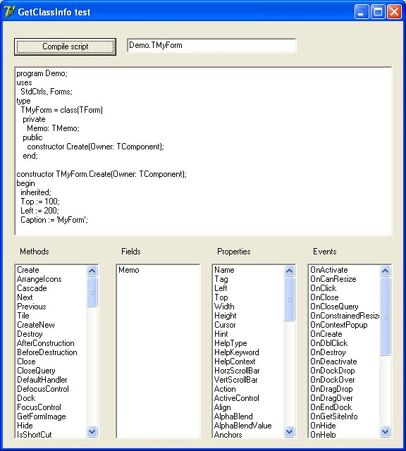

unit Unit1;
interface
uses
Windows, Messages, SysUtils, Variants, Classes, Graphics, Controls, Forms,
Dialogs, BASE_PARSER, PaxScripter, PaxPascal, StdCtrls;
type
TForm1 = class(TForm)
Button1: TButton;
PaxScripter1: TPaxScripter;
PaxPascal1: TPaxPascal;
Label1: TLabel;
Label2: TLabel;
Edit1: TEdit;
MemoScript: TMemo;
ListBoxMethods: TListBox;
ListBoxFields: TListBox;
ListBoxProperties: TListBox;
Label3: TLabel;
ListBoxEvents: TListBox;
Label4: TLabel;
procedure Button1Click(Sender: TObject);
private
{ Private declarations }
public
{ Public declarations }
end;
var
Form1: TForm1;
implementation
{$R *.dfm}
uses
IMP_StdCtrls, IMP_Controls, IMP_Forms;
procedure TForm1.Button1Click(Sender: TObject);
var
S: String;
L: TStrings;
begin
PaxScripter1.ResetScripter;
PaxScripter1.AddModule('1', 'paxPascal');
PaxScripter1.AddCode('1', MemoScript.Lines.Text);
PaxScripter1.Compile();
S := Edit1.Text;
L := ListBoxMethods.Items;
L.Clear;
PaxScripter1.GetClassInfo(S, mkMethod, L);
ListBoxMethods.Invalidate;
L := ListBoxFields.Items;
L.Clear;
PaxScripter1.GetClassInfo(S, mkField, L);
ListBoxFields.Invalidate;
L := ListBoxProperties.Items;
L.Clear;
PaxScripter1.GetClassInfo(S, mkProp, L);
ListBoxProperties.Invalidate;
L := ListBoxEvents.Items;
L.Clear;
PaxScripter1.GetClassInfo(S, mkEvent, L);
ListBoxProperties.Invalidate;
end;
end.